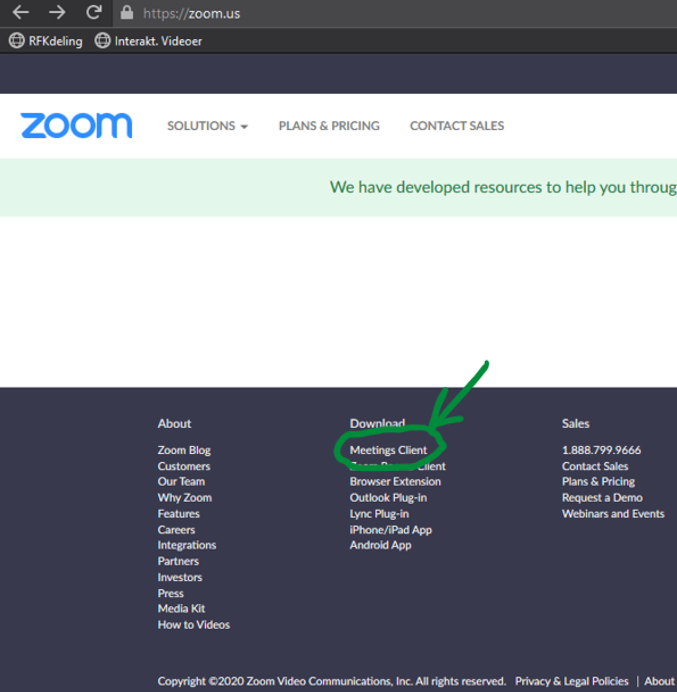
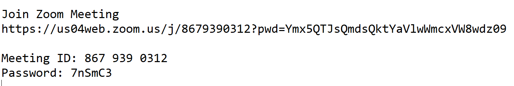
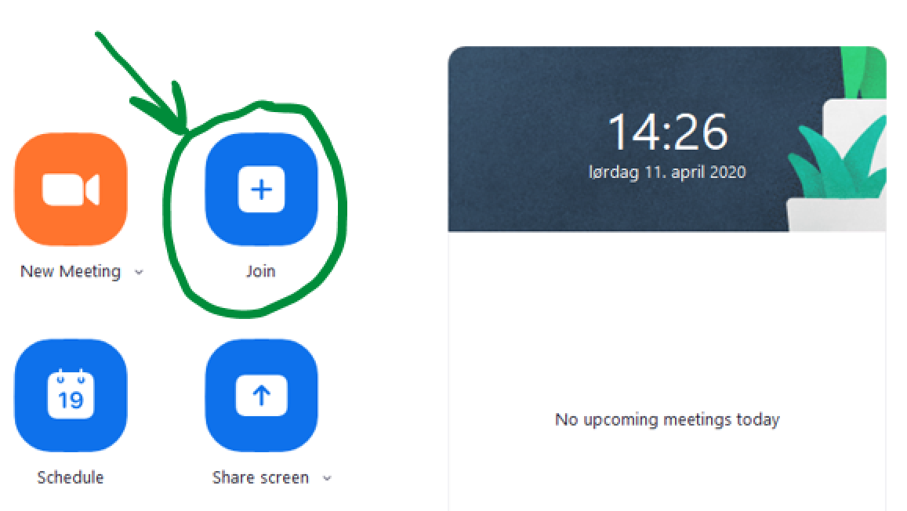

ZOOM: ny digital møte verktøy for Suldal Rotary klubb
laget /v Martijn Bellemakers: 11.april 2020
Dette er enkleste jeg fant på nettet for flere enn 4 deltakere (som var ulempe med Whereby som vi har brukt 6.april).
Nedenfor finner du en lite beskrivelse hvordan du kan forberede til neste møte (sannsynlig 20.april, kl. 19:30).
Vel møtt!
Last ned Zoom
- Gå til https://zoom.us, helt nederst:
Dowmload, Meetings Client, Download (last ned) Zoom Client for meetings (se på bilde nedenfor).

- Lag en konto (sign in)
- Start app (Start Zoom)
- logg på (sign up)
Vent til du få info om møte (eksempel):
https://us04web.zoom.us/j/: her følger kode om møte, trenger du ikke når du allerede har lastet ned app tidligere.

- Start app (Start Zoom)
- logg på (sign up)
- Når du har info tilgjengeling: trykk på Join (+), se bilde nedenfor

- Fyll inn: Meeting ID: 9-10 siffer, fyll inn ved meeting ID
- Fyll inn: Password: 6 bokstaver/tall, fyll inn ved password
OBS: dette er gratis: max 40 minutt! Når vi trenger litt lengre tid, kan jeg starte opp ei ny møte, 40 minutt til...